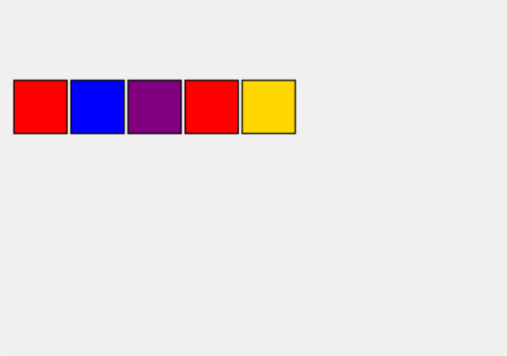
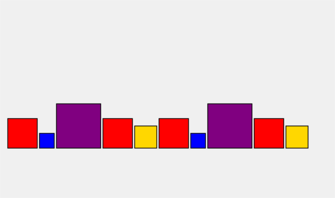
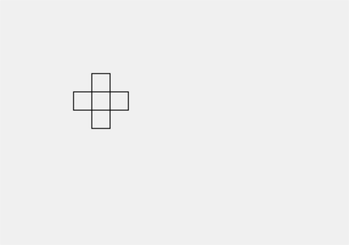
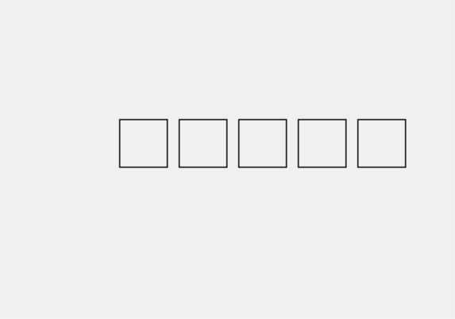
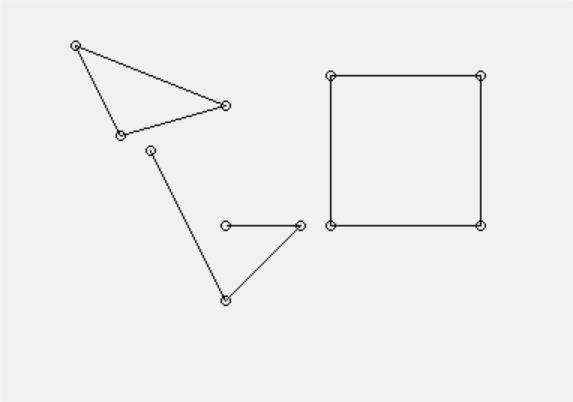
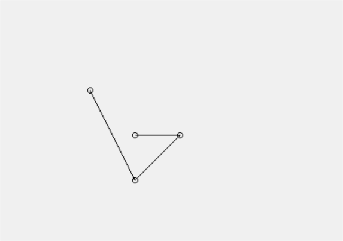
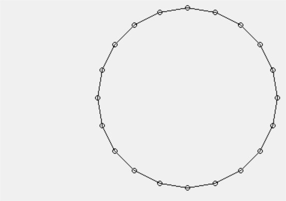
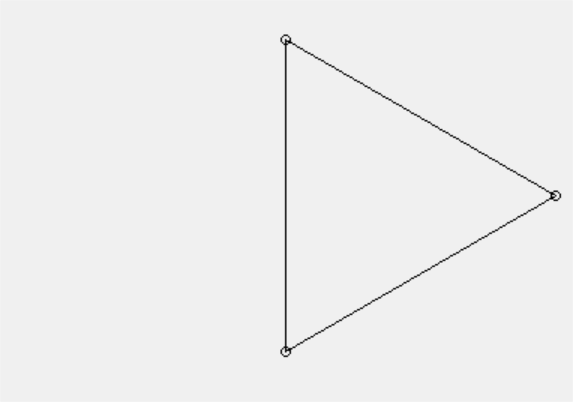

6. Znakové reťazce a súbory¶
Typ znakový reťazec¶
Čo už vieme o znakových reťazcoch:
reťazec je postupnosť znakov uzavretá v apostrofoch
''alebo v úvodzovkách""vieme priradiť reťazec do premennej
zreťaziť (zlepiť) dva reťazce
násobiť (zlepiť viac kópií) reťazca
načítať zo vstupu (pomocou
input()) a vypisovať (pomocouprint())vyrobiť z čísla reťazec (
str()), z reťazca číslo (int(),float())rozobrať reťazec vo
for-cykle
Postupne prejdeme tieto možnosti práce s reťazcami a doplníme ich o niektoré novinky.
Na minulej prednáške sme sa zoznámili s dátovými štruktúrami zoznam a n-tica, o ktorých vieme, že sú to postupnosti nejakých údajov a vieme s nimi manipulovať pomocou rôznych operácií. Keďže aj znakový reťazec je tiež postupnosť nejakých údajov (teda znakov), uvidíme, že niektoré operácie so zoznamami a n-ticami fungujú aj pre reťazce. Pripomeňme si:
operácia
+zreťazuje dve postupnostioperácia
*viacnásobne zreťazuje nejakú postupnosťoperácia
inumožňuje zistiť, či sa v postupnosti nachádza nejaký prvokoperácia
[i]umožôuje pristupovať k i-temu prvku postupnostiindexom je číslo od
0dolen(post) - 1alebo od-1do-len(post)
operácia
[i:j], resp.[i:j:k]umožňuje pracovať s „rezom“, teda „podpostupnosóu“príkazom
for prvok in postupnosť: ...môžeme prechádzať všetky prvkyštandardná funkcia
len(post)vráti počet prvkov postupnostimetódy
countaindexvrátia počet výskytov nejakej hodnoty, resp. index prvého výskytu prvku
Toto všetko funguje nielen so zoznamami, alej aj s n-ticami, pričom vieme, že zoznamy sú mutable a n-tice sú immutable. Postupne prejdeme tieto vlastnosti aj v spojitosti s reťazcami. Nakoľko aj typ znakový reťazec je immutable, rovnako ako typ tuple, uvidíme podobné obmedzenia tohto typu.
Pripomeňme si:
znakový reťazec je postupnosť znakov uzavretá v apostrofoch
''alebo v úvodzovkách"", pre ktorú platí:môže obsahovať ľubovoľné znaky (okrem znaku apostrof
'v''reťazci, a znaku úvodzovka"v úvodzovkovom""reťazci)musí sa zmestiť do jedného riadka (nesmie prechádzať do druhého riadka)
môže obsahovať špeciálne znaky (zapisujú sa dvomi znakmi, ale pritom v reťazci reprezentujú len jeden), vždy začínajú znakom
\(opačná lomka):\n- nový riadok\t- tabulátor\'- apostrof\"- úvodzovka\\- opačná lomka
Napríklad
>>> 'Monty\nPython'
'Monty\nPython'
>>> print('Monty\nPython')
Monty
Python
>>> print('Monty\\nPython')
Monty\nPython
Viacriadkové reťazce
platí:
reťazec, ktorý začína trojicou buď apostrofov
'''alebo úvodzoviek"""môže obsahovať aj'a", môže prechádzať cez viac riadkov (automaticky sa sem doplní\n)musí byť ukončený rovnakou trojicou
'''alebo""">>> macek = '''Išiel Macek ... do Malacek ... šošovičku mlácic''' >>> macek 'Išiel Macek\ndo Malacek\nšošovičku mlácic' >>> print(macek) Išiel Macek do Malacek šošovičku mlácic >>> '''tento retazec obsahuje " aj ' a funguje''' 'tento retazec obsahuje " aj \' a funguje' >>> print('''tento retazec obsahuje " aj ' a funguje''') tento retazec obsahuje " aj ' a funguje
Môže sa použiť aj pri ladení a testovaní, lebo máme lepší prehľad o skutočnom obsahu reťazca. Napríklad:
>>> a = 'ahoj \naj "apostrof" \' v texte \n'
>>> print(a)
ahoj
aj "apostrof" ' v texte
>>> print(repr(a))
'ahoj \naj "apostrof" \' v texte \n'
>>> print(f'{a!r}') # urobí _repr so zadanou hodnotou
'ahoj \naj "apostrof" \' v texte \n'
Dĺžka reťazca
Už poznáme štandardnú funkciu len(), ktorá vráti dĺžku reťazca (špeciálne znaky ako '\n', '\'', a pod. reprezentujú len 1 znak):
>>> a = 'Python'
>>> len(a)
6
>>> len('Peter\'s dog')
11
>>> len('\\\\\\')
3
Už vieme, že túto funkciu môžeme naprogramovať aj sami, ale v porovnaní so štandardnou funkciou len() bude oveľa pomalšia:
def dlzka(retazec):
pocet = 0
for znak in retazec:
pocet += 1
return pocet
>>> dlzka('Python')
6
>>> x = 'x' * 100000000
>>> dlzka(x)
100000000
>>> len(x)
100000000
Operácia in
Aby sme zistili, či sa v reťazci nachádza nejaký konkrétny znak, doteraz sme to museli riešiť takto:
def zisti(znak, retazec):
for z in retazec:
if z == znak:
return True
return False
>>> zisti('y', 'Python')
True
>>> zisti('T', 'Python')
False
Pritom existuje binárna operácia in, ktorá zisťuje, či sa zadaný podreťazec nachádza v nejakom konkrétnom reťazci. Jej tvar je
podretazec in retazec
Najčastejšie sa bude využívať v príkaze if a v cykle while, napríklad:
>>> 'nt' in 'Monty Python'
True
>>> 'y P' in 'Monty Python'
True
>>> 'tyPy' in 'Monty Python'
False
>>> 'pyt' in 'Monty Python'
False
Na rozdiel od našej vlastnej funkcie zisti(), operácia in funguje nielen pre zisťovanie jedného znaku, ale aj pre ľubovoľne dlhý podreťazec.
Ak niekedy budeme potrebovať negáciu tejto podmienky, môžeme zapísať:
if not 'a' in retazec:
...
if 'a' not in retazec:
...
Pričom sa odporúča druhý spôsob zápisu not in.
Operácia indexovania [ ]
Pomocou tejto operácie vieme pristupovať k jednotlivým znakom postupnosti (znakový reťazec je postupnosť znakov). Jej tvar je
reťazec[číslo]
Celému číslu v hranatých zátvorkách hovoríme index:
znaky v reťazci sú indexované od
0dolen()-1, t.j. prvý znak v reťazci má index 0, druhý 1, … posledný má indexlen()-1výsledkom indexovania je vždy 1-znakový reťazec (čo je nový reťazec s kópiou 1 znaku z pôvodného reťazca) alebo chybová správa, keď indexujeme mimo znaky reťazca
Očíslujme znaky reťazca:
|
|
|
|
|
|
|
|
|
|
|
||
|---|---|---|---|---|---|---|---|---|---|---|---|---|
0 |
1 |
2 |
3 |
4 |
5 |
6 |
7 |
8 |
9 |
10 |
11 |
Napríklad do premennej abc priradíme reťazec 12 znakov a pristupujeme ku niektorým znakom pomocou indexu:
>>> abc = 'Monty Python'
>>> abc[3]
't'
>>> abc[9]
'h'
>>> abc[12]
...
IndexError: string index out of range
>>> abc[len(abc) - 1]
'n'
Vidíme, že posledný znak v reťazci má index dĺžka reťazca-1. Ak indexujeme väčším číslom ako 11, vyvolá sa chybová správa IndexError: string index out of range.
Často sa indexuje v cykle, kde premenná cyklu nadobúda správne hodnoty indexov, napríklad:
a = 'Python'
for i in range(len(a)):
print(i, a[i])
0 P
1 y
2 t
3 h
4 o
5 n
Funkcia range(len(a)) zabezpečí, že cyklus prejde postupne pre všetky i od 0 do len(a)-1.
Indexovanie so zápornými indexmi
Keďže často potrebujeme pristupovať ku znakom na konci reťazca, môžeme to zapisovať pomocou záporných indexov:
abc[-5] == abc[len(abc)-5]
Znaky reťazca sú indexované od -1 do -len() takto:
|
|
|
|
|
|
|
|
|
|
|
||
|---|---|---|---|---|---|---|---|---|---|---|---|---|
0 |
1 |
2 |
3 |
4 |
5 |
6 |
7 |
8 |
9 |
10 |
11 |
|
-12 |
-11 |
-10 |
-9 |
-8 |
-7 |
-6 |
-5 |
-4 |
-3 |
-2 |
-1 |
Napríklad:
>>> abc = 'Monty Python'
>>> abc[len(abc)-1]
'n'
>>> abc[-1]
'n'
>>> abc[-7]
' '
>>> abc[-13]
...
IndexError: string index out of range
alebo aj for-cyklom:
a = 'Python'
for i in range(1, len(a) + 1):
print(-i, a[-i])
-1 n
-2 o
-3 h
-4 t
-5 y
-6 P
alebo for-cyklom so záporným krokom:
a = 'Python'
for i in range(-1, -len(a) - 1, -1):
print(i, a[i])
-1 n
-2 o
-3 h
-4 t
-5 y
-6 P
Podreťazce
Indexovať môžeme nielen jeden znak, ale aj nejaký podreťazec celého reťazca. Opäť použijeme operátor indexovania, ale index bude obsahovať znak ':':
reťazec[prvý : zaposledný]
kde
prvýje index začiatku podreťazcazaposlednýje index prvku jeden za, t.j. musíme písať index prvku o 1 viactakejto operácii hovoríme rez (alebo po anglicky slice)
ak takto indexujeme mimo reťazec, nenastane chyba, ale prvky mimo sú prázdny reťazec
Ak indexujeme rez od 6. po 11. prvok:
|
|
|
|
|
|
|
|
|
|
|
||
|---|---|---|---|---|---|---|---|---|---|---|---|---|
^ |
^ |
|||||||||||
0 |
1 |
2 |
3 |
4 |
5 |
6 |
7 |
8 |
9 |
10 |
11 |
prvok s indexom 11 už vo výsledku nebude:
>>> abc = 'Monty Python'
>>> abc[6:11]
'Pytho'
>>> abc[6:12]
'Python'
>>> abc[6:len(abc)]
'Python'
>>> abc[6:12]
'Python'
>>> abc[10:16]
'on'
Podreťazce môžeme vytvárať aj v cykle:
a = 'Python'
for i in range(len(a)):
print(f'{i}:{i + 3} {a[i:i + 3]}')
0:3 Pyt
1:4 yth
2:5 tho
3:6 hon
4:7 on
5:8 n
alebo
a = 'Python'
for i in range(len(a)):
print(f'{i}:{len(a)} {a[i:len(a)]}')
0:6 Python
1:6 ython
2:6 thon
3:6 hon
4:6 on
5:6 n
Ešte otestujte aj takéto zápisy:
>>> 'Python'[1:-1]
'ytho'
>>> 'Python'[-5:4]
'yth'
>>> 'Python'[-3:3]
''
>>> 'Python'[1:-1][1:-1]
'th'
Dobre sa zamyslite nad každým z týchto reťazcových výrazov.
Predvolená hodnota
Ak neuvedieme prvý index v podreťazci, bude to označovať rez od začiatku reťazca. Zápis je takýto:
reťazec[ : zaposledný]
Ak neuvedieme druhý index v podreťazci, označuje to, že chceme rez až do konca reťazca. Teda:
reťazec[prvý : ]
Uvedomte si, že zápisy reťazec[:počet] a reťazec[-počet:] budú veľmi často označovať buď prvých alebo posledných počet znakov reťazca.
Ak neuvedieme ani jeden index v podreťazci, označuje to, že chceme celý reťazec, t.j. vytvorí sa kópia pôvodného reťazca:
reťazec[ : ]
|
|
|
|
|
|
|
|
|
|
|
||
|---|---|---|---|---|---|---|---|---|---|---|---|---|
0 |
1 |
2 |
3 |
4 |
5 |
6 |
7 |
8 |
9 |
10 |
11 |
|
-12 |
-11 |
-10 |
-9 |
-8 |
-7 |
-6 |
-5 |
-4 |
-3 |
-2 |
-1 |
napríklad
>>> abc = 'Monty Python'
>>> abc[6:] # od 6. znaku do konca
'Python'
>>> abc[:5] # od zaciatku po 4. znak = prvých 5 znakov reťazca
'Monty'
>>> abc[-4:] # od 4. od konca az do konca = posledné 4 znaky reťazca
'thon'
>>> abc[16:] # indexujeme mimo retazca
''
Podreťazce s krokom
Podobne ako vo funkcii range() aj pri indexoch podreťazca môžeme určiť aj krok indexov:
reťazec[prvý : zaposledný : krok]
kde krok určuje o koľko sa bude index v reťazci posúvať od prvý po posledný. Napríklad:
>>> abc = 'Monty Python'
>>> abc[2:10:2]
'nyPt'
>>> abc[::3]
'MtPh'
>>> abc[9:-7:-1]
'htyP'
>>> abc[::-1]
'nohtyP ytnoM'
>>> abc[6:] + ' ' + abc[:5]
'Python Monty'
>>> abc[4::-1] + ' ' + abc[:5:-1]
'ytnoM nohtyP'
>>> (abc[6:] + ' ' + abc[:5])[::-1]
'ytnoM nohtyP'
>>> 'kobyla ma maly bok'[::-1]
'kob ylam am alybok'
>>> abc[4:9]
'y Pyt'
>>> abc[4:9][2] # aj podretazce mozeme dalej indexovat
'P'
>>> abc[4:9][2:4]
'Py'
>>> abc[4:9][::-1]
'tyP y'
Reťazce sú v pamäti nemenné (nemeniteľné)
Typ str (znakové reťazce) je nemeniteľný typ (hovoríme aj immutable). To znamená, že hodnota reťazca sa v pamäti nedá zmeniť. Ak budeme potrebovať reťazec, v ktorom je nejaká zmena, budeme musieť skonštruovať nový. Napríklad:
>>> abc[6] = 'K'
TypeError: 'str' object does not support item assignment
Všetky doterajšie manipulácie s reťazcami nemenili reťazec, ale zakaždým vytvárali úplne nový (niekedy to bola len kópia pôvodného), napríklad:
>>> cba = abc[::-1]
>>> abc
'Monty Python'
>>> cba
'nohtyP ytnoM'
Takže, keď chceme v reťazci zmeniť nejaký znak, budeme musieť skonštruovať nový reťazec, napríklad takto:
>>> abc[6] = 'K'
...
TypeError: 'str' object does not support item assignment
>>> novy = abc[:6] + 'K' + abc[7:]
>>> novy
'Monty Kython'
>>> abc
'Monty Python'
Alebo, ak chceme opraviť prvý aj posledný znak:
>>> abc = 'm' + abc[1:-1] + 'N'
>>> abc
'monty PythoN'
Porovnávanie jednoznakových reťazcov
Jednoznakové reťazce môžeme porovnávať relačnými operátormi ==, !=, <, <=, >, >=, napríklad:
>>> 'x' == 'x'
True
>>> 'm' != 'M'
True
>>> 'a' > 'm'
False
>>> 'a' > 'A'
True
Python na porovnávanie používa vnútornú reprezentáciu Unicode (UTF-8). S touto reprezentáciou môžeme pracovať pomocou funkcií ord() a chr():
funkcia
ord(znak)vráti vnútornú reprezentáciu znaku (kódovanie v pamäti počítača)>>> ord('a') 97 >>> ord('A') 65
opačná funkcia
chr(číslo)vráti jednoznakový reťazec, pre ktorý má tento znak danú číselnú reprezentáciu>>> chr(66) 'B' >>> chr(244) 'ô'
Pri porovnávaní dvoch znakov sa porovnávajú ich vnútorné reprezentácie, t.j.
>>> ord('a') > ord('A')
True
>>> 97 > 65
True
>>> 'a' > 'A'
True
Vnútornú reprezentáciu niektorých znakov môžeme zistiť, napríklad pomocou for-cyklu:
for i in range(ord('A'), ord('J')):
print(i, chr(i))
65 A
66 B
67 C
68 D
69 E
70 F
71 G
72 H
73 I
Vyskúšajte:
>>> chr(8984)
>>> chr(9819)
>>> chr(9860)
>>> chr(9328)
Prípadne vyskúšajte vypísať tieto znaky do grafickej plochy pomocou nejakého väčšieho fontu v create_text. Môžete si pozrieť, napríklad túto tabuľku rôznych znakov v tomto kódovaní.
Porovnávanie dlhších reťazcov
Dlhšie reťazce Python porovnáva postupne po znakoch:
kým sú v oboch reťazcoch rovnaké znaky, preskakuje ich
pri prvom rôznom znaku, porovná tieto dva znaky
Napríklad pri porovnávaní dvoch reťazcov ‚kocur‘ a ‚kohut‘:
porovná 0. znaky:
'k' == 'k'porovná 1. znaky:
'o' == 'o'porovná 2. znaky:
'c' < 'h'a tu aj skončí porovnávanie týchto reťazcov
Preto platí, že 'kocur' < 'kohut'. Treba si dávať pozor na znaky s diakritikou, lebo, napríklad ord('č') = 269 > ord('h') = 104. Napríklad:
>>> 'kocúr' < 'kohút'
True
>>> 'kočka' < 'kohut
False
>>> 'PYTHON' < 'Python' < 'python'
True
alebo
>>> 'pytagoras' < 'python' < 'pytliak' < 'pyton'
True
Prechádzanie reťazca v cykle
Už sme videli, že prvky znakového reťazca môžeme prechádzať for-cyklom, v ktorom indexujeme celý reťazec postupne od 0 do len()-1:
a = 'Python'
for i in range(len(a)):
print('.' * i, a[i])
P
. y
.. t
... h
.... o
..... n
Tiež vieme, že for-cyklom môžeme prechádzať nielen postupnosť indexov (t.j. range(len(a))), ale priamo postupnosť znakov, napríklad:
for znak in 'python':
print(znak * 5)
ppppp
yyyyy
ttttt
hhhhh
ooooo
nnnnn
Zrejme reťazec vieme prechádzať aj while-cyklom, napríklad:
a = '.....veľa bodiek'
print(a)
while len(a) != 0 and a[0] == '.':
a = a[1:]
print(a)
.....veľa bodiek
veľa bodiek
Cyklus sa opakoval, kým bol reťazec neprázdny a kým boli na začiatku reťazca znaky bodky '.'. Vtedy sa v tele cyklu reťazec skracoval o prvý znak. Uvedený while-cyklus môžeme zapísať aj takto:
while a and a[0] == '.':
a = a[1:]
Zamyslite sa, prečo musíme v podmienke kontrolovať, či je reťazec neprázdny. Hoci v tomto prípade by sme to vedeli zapísať aj takto (menej prehľadne):
while a[:1] == '.':
a = a[1:]
Automatické číslovanie prechodov vo for-cykle
Už sme si zvykli, že ak by sme potrebovali v takomto cykle:
for znak in 'Python':
print(znak)
ku každému vypisovanému znaku pridať aj jeho poradové číslo, musíme použiť pomocnú premennú a zyšovať ju v cykle o 1, napríklad takto:
i = 0
for znak in 'Python':
print(i, znak)
i += 1
Keďže teraz už vieme znakové reťazce aj indexovať, vieme to prepísať aj takto:
retazec = 'Python'
for i in range(len(retazec)):
print(i, retazec[i])
Existuje ešte jeden spôsob, ktorý je z týchto „najpythonovejší“ (pythonic). Využijeme ďalšiu štandardnú funkciu enumerate, pomocou ktorej môžeme for-cyklus zapísať novým štýlom:
for i, znak in enumerate('Python'):
print(i, znak)
Táto funkcia očakáva, že ako parameter dostane nejakú postupnosť (napríklad postupnosť znakov) a jej úlohou bude každý prvok tejto postupnosti očíslovať. Vďaka tomuto for-cyklus dokáže nastavovať naraz dve premenné cyklu: premennú pre očíslovanie (premenná i) a premennú pre hodnotu (u nás je to premenná znak). Tento cyklus teda prejde 6-krát, ale zakaždým nastaví naraz dve premenné:
0 P
1 y
2 t
3 h
4 o
5 n
Všimnite si, že číslovanie prechodov cyklu prebieha od 0 a nie od 1, presne tak, ako je to v Pythone zvykom.
Ukážme ešte jeden príklad s enumerate. Najprv obyčajný for-cyklus:
for cislo in range(5, 25, 6):
print(cislo)
5
11
17
23
Ak teraz potrebujeme očíslovať každý prechod tohto for-cyklu, môžeme zapísať:
for i, cislo in enumerate(range(5, 25, 6)):
print(i, cislo)
0 5
1 11
2 17
3 23
Pripočítavacia šablóna
Pripomeňme si pripočítavaciu šablónu z 2. prednášky, pomocou ktorej sme prešli prvky (znaky) znakového reťazca a poskladali sme z nich dva ďalšie raťazce:
vstup = input('zadaj: ')
pocet = 0
retazec1 = retazec2 = ''
for znak in vstup:
retazec1 = retazec1 + znak
retazec2 = znak + retazec2
pocet = pocet + 1
print('počet znakov reťazca =', pocet)
print('retazec1 =', retazec1)
print('retazec2 =', retazec2)
Táto šablóna znamená to, že pred cyklom inicializujeme premenné, ktoré sa budú v cykle meniť. Najčastejšie budeme tieto premenné v cykle meniť pripočítavaním, alebo odpočítavaním, pridávaním, zreťazovaním a pod. Po skončení cyklu bude v týchto premenných výsledok. V našom príklade bude v premennej retazec1 kópia vstupného reťazca vstup, v retazec2 bude prevrátená hodnota vstupu a v pocet počet prechodov cyklu, teda počet znakov v reťazci.
Reťazcové funkcie
Už poznáme tieto štandardné funkcie:
len()- dĺžka reťazcaint(),float()- prevod reťazca na celé alebo desatinné číslobool()- prevod reťazca naTruealeboFalse(ak je prázdny, výsledok budeFalse)str()- prevod čísla (aj ľubovoľnej inej hodnoty) na reťazecord(),chr()- prevod do a z Unicode
Okrem nich existujú ešte aj tieto tri užitočné štandardné funkcie:
bin()- prevod celého čísla do reťazca, ktorý reprezentuje toto číslo v dvojkovej sústavehex()prevod celého čísla do reťazca, ktorý reprezentuje toto číslo v šestnástkovej sústaveoct()- prevod celého čísla do reťazca, ktorý reprezentuje toto číslo v osmičkovej sústave
Napríklad
>>> bin(123)
'0b1111011'
>>> hex(123)
'0x7b'
>>> oct(123)
'0o173'
Zápisy celého čísla v niektorej z týchto sústav fungujú ako celočíselné konštanty:
>>> 0b1111011
123
>>> 0x7b
123
>>> 0o173
123
Vlastné funkcie
Môžeme vytvárať vlastné funkcie, ktoré majú aj reťazcové parametre, resp. môžu vracať reťazcovú návratovú hodnotu. Niekoľko námetov:
funkcia vráti
Trueak je daný znak (jednoznakový reťazec) číslicou:def je_cifra(znak): return '0' <= znak <= '9'
alebo inak
def je_cifra(znak): return znak in '0123456789'
funkcia vráti
Trueak je daný znak (jednoznakový reťazec) malé alebo veľké písmeno (anglickej abecedy)def je_pismeno(znak): return 'a' <= znak <= 'z' or 'A' <= znak <= 'Z'
parametrom funkcie je reťazec s menom a priezviskom (oddelené sú práve jednou medzerou) - funkcia vráti reťazec, v ktorom bude najprv priezvisko a až za tým meno (oddelené medzerou)
def meno(r): ix = 0 while ix < len(r) and r[ix] != ' ': # najde medzeru ix += 1 return r[ix + 1:] + ' ' + r[:ix]
funkcia vráti prvé slovo vo vete; predpokladáme, že obsahuje len malé a veľké písmená (využijeme funkciu
je_pismeno)def slovo(veta): for i in range(len(veta)): if not je_pismeno(veta[i]): return veta[:i] return veta
Reťazcové metódy¶
Je to špeciálny spôsob zápisu volania funkcie (bodková notácia):
reťazec.metóda(parametre)
kde metóda je meno niektorej z metód, ktoré sú v systéme už definované pre znakové reťazce. My si ukážeme niekoľko užitočných metód, s niektorými ďalšími sa zoznámime neskôr:
reťazec.count(podreťazec)- zistí počet výskytov podreťazca v reťazcireťazec.find(podreťazec)- zistí index prvého výskytu podreťazca v reťazcireťazec.lower()- vráti reťazec, v ktorom prevedie všetky písmená na maléretazec.upper()- vráti reťazec, v ktorom prevedie všetky písmená na veľkéreťazec.replace(podreťazec1, podreťazec2)- vráti reťazec, v ktorom nahradí všetky výskytypodreťazec1iným reťazcompodreťazec2reťazec.strip()- vráti reťazec, v ktorom odstráni medzery na začiatku a na konci reťazca (odfiltruje pritom aj iné oddeľovacie znaky ako'\n'a'\t')reťazec.format(hodnoty)- vráti reťazec, v ktorom nahradí formátovacie prvky'{}'zadanými hodnotami
Ak chceme o niektorej z metód získať help, môžeme zadať, napríklad:
>>> help(''.find)
Help on built-in function find:
find(...) method of builtins.str instance
S.find(sub[, start[, end]]) -> int
...
Formátovanie reťazca
Možnosti formátovania pomocou formátovacích reťazcov f'{x}' sme už videli predtým. Teraz ukážeme niekoľko užitočných formátovacích prvkov. Volanie má tvar:
f'formátovací reťazec s hodnotami v {}'
Takýto zápis, ale funguje až od verzie Pythonu 3.6 a vyššie. V starších verziách budeme musieť použiť tvar reťazec.format(parametre), ale ten tu rozoberať nebudeme, hoci sa veľmi podobá novšiemu zápisu.
Formátovací reťazec obsahuje formátovacie prvky, ktoré sa nachádzajú v {} zátvorkách: v týchto zátvorkách sa musí náchadzať priamo nejaká hodnota (môže to byť ľubovoľný pythonovský výraz) a za ňou sa môže nachádzať špecifikácia oddelená znakom ':'. Napríklad:
>>> x = 1237
>>> a = f'vysledok pre x={x} je {x + 8}'
>>> ahoj = 'hello'
>>> b = f'ahoj po anglicky je "{ahoj}"'
Python v tomto prípade najprv vyhľadá všetky výskyty zodpovedajúcich '{}' a vyhodnotí (vypočíta hodnoty) výrazov, ktoré sú vo vnútri týchto zátvoriek. Tieto hodnoty potom dosadí do reťazca namiesto zápisu {...}. Zrejme, ak to neboli reťazcové hodnoty (napríklad to boli čísla), tak ich najprv prevedie na reťazce.
V ďalšom príklade sme v {} použili aj nejaké špecifikácie, t.j. upresnenie formátovania:
>>> r, g, b = 100, 150, 200
>>> farba = f'#{r:02x}{g:02x}{b:02x}'
Špecifikácia formátu
V zátvorkách '{}' sa môžu nachádzať rôzne upresnenia formátovania, ktorými určujeme detaily, ako sa budú vypočítané hodnoty prevádzať na reťazce. Prvé číslo za : váčšinou označuje šírku (počet znakov), do ktorej sa vloží reťazec a ďalej tam môžu byť znaky na zarovnanie ('<', '>', '^') a znaky na typ hodnoty ('d', 'f', …). Napríklad:
'{hodnota:10}'- šírka výpisu 10 znakov'{hodnota:>7}'- šírka 7, zarovnané vpravo'{hodnota:<5d}'- šírka 5, zarovnané vľavo, parameter musí byť celé číslo (bude sa vypisovať v 10-ovej sústave)'{hodnota:12.4f}'- šírka 12, parameter desatinné číslo vypisované na 4 desatinné miesta'{hodnota:06x}'- šírka 6, zľava doplnená nulami, parameter celé číslo sa vypíše v 16-ovej sústave'{hodnota:^20s}'- šírka 20, vycentrované, parametrom je reťazec
Zhrňme najpoužívanejšie písmená pri označovaní typu parametra:
d- celé číslo v desiatkovej sústaveb- celé číslo v dvojkovej sústavex- celé číslo v šestnástkovej sústaves- znakový reťazecf- desatinné číslo (možno špecifikovať počet desatinných miest, inak default 6)g- desatinné číslo vo všeobecnom formáte
S postupnosťami objektov (teda v tomto prípade reťazcov) sme sa zatiaľ nenaučili efektívne pracovať, ale vieme to využiť v paralelnom priradení alebo vo for-cykle. Ukážme si to na príklade:
>>> m = 'Guido van Rossum'
>>> m.split() # vytvorí postupnosť reťazcov
['Guido', 'van', 'Rossum']
>>> a, b, c = m.split()
>>> a
'Guido'
>>> b
'van'
>>> c
'Rossum'
>>> for slovo in m.split():
... print('<' + slovo + '>')
<Guido>
<van>
<Rossum>
Metóda split() sa často využíva pri rozdelení prečítaného reťazca zo vstupu (pomocou input()) na viac častí, napríklad:
>>> x, y = input('zadaj 2 čísla: ').split()
zadaj 2 čísla: 15 999
>>> x
'15'
>>> y
'999'
>>> x, y = int(x), int(y)
Metóda split() môže dostať ako parameter oddeľovač, napríklad, ak sme prečítali čísla oddelené čiarkami:
sucet = 0
for prvok in input('zadaj čísla: ').split(','):
sucet += int(prvok)
print('ich súčet je', sucet)
zadaj čísla: 10, 20, 30, 40
ich súčet je 100
alebo dátum, v ktorom sú časti oddelené znakom '.':
>>> den, mesiac, rok = input('zadaj dátum: ').split('.')
zadaj dátum: 9.okt.2024
>>> den
'9'
>>> mesiac
'okt'
>>> rok
'2024'
Využijeme to, napríklad, v takomto tvare:
>>> m = ' Guido\n van Rossum \n'
>>> print(m)
Guido
van Rossum
>>> a, b, c = m.split()
>>> a
'Guido'
>>> b
'van'
>>> c
'Rossum'
>>> ' '.join(m.split())
'Guido van Rossum'
Namiesto oddeľovača ' ' môže metóda join(postupnosť) zlepovať reťazce v postupnosti ľubovoľným iným reťazcom, napríklad:
>>> '<=>'.join(m.split())
'Guido<=>van<=>Rossum'
V ďalšej prednáške uvidíme úplné využitie týchto dvoch metód split() a join().
Dokumentačný reťazec pri definovaní funkcie
Ak funkcia vo svojom tele hneď ako prvý riadok obsahuje znakový reťazec (zvykne byť viacriadkový s '''), tento sa stáva, tzv. dokumentačným reťazcom (docstring). Pri vykonávaní tela funkcie sa takéto reťazce ignorujú (preskakujú). Tento reťazec (docstring) sa, ale môže neskôr vypísať, napríklad štandardnou funkciou help().
Zadefinujme reťazcovú funkciu a hneď do nej dopíšeme aj niektoré základné informácie:
def pocet_vyskytov(podretazec, retazec):
'''funkcia vráti počet výskytov podreťazca v reťazci
prvý parameter podretazec - ľubovoľný neprázdny reťazec, o ktorom sa
bude zisťovať počet výskytov
druhý parameter retazec - reťazec, v ktorom sa hľadajú výskyty
ak je prvý parameter podretazec prázdny reťazec, funkcia vráti len(retazec)
'''
pocet = 0
for ix in range(len(retazec)):
if retazec[ix:ix + len(podretazec)] == podretazec:
pocet += 1
return pocet
Takto definovaná funkcia funguje rovnako, ako keby žiaden dokumentačný reťazec neobsahovala, ale teraz bude fungovať aj:
>>> help(pocet_vyskytov)
Help on function pocet_vyskytov in module __main__:
pocet_vyskytov(podretazec, retazec)
funkcia vráti počet výskytov podreťazca v reťazci
prvý parameter podretazec - ľubovoľný neprázdny reťazec, o ktorom sa
bude zisťovať počet výskytov
druhý parameter retazec - reťazec, v ktorom sa hľadajú výskyty
ak je prvý parameter podretazec prázdny reťazec, funkcia vráti len(retazec)
Tu môžeme vidieť užitočnú vlastnosť Pythonu: programátor, ktorý vytvára nejaké nové funkcie, môže hneď vytvárať aj malú dokumentáciu o jej používaní pre ďalších programátorov. Asi ľahko uhádneme, ako funguje napríklad aj toto:
>>> help(hex)
Help on built-in function hex in module builtins:
hex(number, /)
Return the hexadecimal representation of an integer.
>>> hex(12648430)
'0xc0ffee'
Pri takomto spôsobe samodokumentácie funkcií si treba uvedomiť, že Python v tele funkcie ignoruje nielen všetky reťazce, ale aj iné konštanty:
ak napríklad zavoláme funkciu, ktorá vracia nejakú hodnotu a túto hodnotu ďalej nespracujeme (napríklad priradením do premennej, použitím ako parametra inej funkcie, …), vyhodnocovanie funkcie takúto návratovú hodnotu ignoruje
ak si uvedomíme, že meno funkcie bez okrúhlych zátvoriek nespôsobí volanie tejto funkcie, ale len hodnotu referencie na funkciu, tak aj takýto zápis sa ignoruje
Napríklad všetky tieto zápisy sa v tele funkcie (alebo aj v programovom režime mimo funkcie) ignorujú:
s.replace('a', 'b')
print
g.pack
pocet + 1
i == i + 1
math.sin(uhol)
Python pri nich nehlási ani žiadnu chybu.
Príklad s kreslením a reťazcami
Navrhnime malú aplikáciu, v ktorej budeme pohybovať mysleným perom. Toto pero sa bude hýbať v jednom zo štyroch smerov: 's' pre sever, 'v' pre východ, 'j' pre juh, 'z' pre západ. Dĺžka kroku pera nech je nejaká malá konštanta, napríklad 10:
import tkinter
def kresli(retazec):
x, y = 100, 100
for znak in retazec:
x1, y1 = x, y
if znak == 's':
y1 -= 10
elif znak == 'v':
x1 += 10
elif znak == 'j':
y1 += 10
elif znak == 'z':
x1 -= 10
else:
print(f'nerozumiem "{znak}"')
return
canvas.create_line(x, y, x1, y1)
x, y = x1, y1
canvas = tkinter.Canvas()
canvas.pack()
kresli('ssvvjjzz')
tkinter.mainloop()
Po spustení dostaneme:
{kind=link}
Zrejme rôzne reťazce znakov, ktoré obsahujú len naše štyri písmená pre smery pohybu, budú kresliť rôzne útvary. Napríklad:
kresli('vvvvvvvjjjjjjjzzzzzzzsssssss')
nakreslí trochu väčší štvorec. Toto vieme zapísať napríklad aj takto:
kresli('v' * 7 + 'j' * 7 + 'z' * 7 + 's' * 7)
Alebo
def stvorec(n):
return 'v' * n + 'j' * n + 'z' * n + 's' * n
kresli(stvorec(7))
Na cvičeniach budeme rôzne vylepšovať túto ideu funkcie kresli().
Textové súbory¶
So súbormi súvisia znakové reťazce ale aj príkazy input() a print() na vstup a výstup:
znakové reťazce sú postupnosti znakov (v kódovaní Unicode), ktoré môžu obsahovať aj znaky konca riadka
'\n'funkcia
input()prečíta zo štandardného vstupu znakový reťazec, t.j. číta z klávesnicefunkcia
print()zapíše reťazec na štandardný výstup, t.j. vypisuje do textového konzolového okna
So súbormi sa vo všeobecnosti pracuje takto:
najprv musíme vytvoriť spojenie medzi našim programom a súborom, ktorý je veľmi často v nejakej externej pamäti - tomuto hovoríme otvoriť súbor
teraz sa dá so súborom pracovať, t.j. môžeme z neho čítať, alebo do neho zapisovať
keď so súborom skončíme prácu, musíme zrušiť spojenie, hovoríme tomu zatvoriť súbor
Čítanie zo súboru¶
Najprv sa naučíme čítať zo súboru, čo označuje, že náš program sa postupne dozvedá, aký je obsah súboru.
Otvorenie súboru na čítanie
Súbor otvárame volaním štandardnej funkcie open(), ktorej oznámime meno súboru, ktorý chceme čítať. Táto funkcia vráti referenciu na súborový objekt (hovoríme tomu aj dátový prúd, t.j. stream):
premenná = open('meno_súboru', 'r')
Do súborovej premennej sa priradí spojenie s uvedeným súborom. Najčastejšie je tento súbor umiestnený v tom istom priečinku, v ktorom sa nachádza samotný Python skript. Meno súboru môže obsahovať aj celú cestu k súboru, prípadne môže byť relatívna k umiestneniu skriptu.
Meno súborovej premennej je vhodné voliť tak, aby nejako zodpovedalo vzťahu k súboru, napríklad:
subor = open('pribeh.txt', 'r')
kniha = open('c:/dokumenty/python.txt', 'r')
subor_s_cislami = open('../texty/cisla.txt', 'r')
V týchto príkladoch otvárania súborov vidíte, že meno súboru môže byť kompletná cesta 'c:/dokumenty/python.txt' alebo relatívna k pozícii skriptu '../texty/cisla.txt'.
Čítanie z otvoreného súboru
Najčastejšie sa informácie zo súboru čítajú po celých riadkoch. Možností, ako takto čítať je viac. Základný spôsob je:
riadok = subor.readline()
Funkcia readline() je metódou súborovej premennej, preto za meno súborovej premennej píšeme bodku a meno funkcie. Funkcia vráti znakový reťazec - prečítaný riadok aj s koncovým znakom '\n'. Súborová premenná si zároveň zapamätá, kde v súbore sa práve nachádza toto čítanie, aby každé ďalšie zavolanie readline() čítalo ďalšie a ďalšie riadky.
Funkcia vráti prázdny reťazec '', ak sa už prečítali všetky riadky a teda pozícia čítania v súbore je na konci súboru.
Zrejme prečítaný riadok nemusíme priradiť do premennej, ale môžeme ho spracovať aj inak, napríklad:
subor = open('subor.txt', 'r')
print(subor.readline())
print('dlzka =', len(subor.readline()))
print(subor.readline()[::-1])
V tomto programe sa najprv vypíše obsah prvého riadka, potom dĺžka druhého riadka (aj s koncovým znakom '\n') a na záver sa vypíše tretí riadok, ale otočený (aj s koncovým znakom '\n', ktorý sa vypíše ako prvý).
Zatvorenie súboru
Keď skončíme prácu so súborom, uzavrieme otvorené spojenie volaním metódy:
subor.close()
Tým sa uvoľnia všetky systémové zdroje (resources), ktoré boli potrebné pre otvorený súbor. Zrejme so zatvoreným súborom sa už nedá ďalej pracovať a napríklad čítanie by vyvolalo chybovú správu.
Ďalej ukážeme, ako môžeme pracovať s textovým súborom. Predpokladajme, že máme pripravený nejaký textový súbor, napríklad 'subor.txt':
Od ucenia este
nikto nezomrel,
ale naco riskovat.
Albert Einstein
Tento súbor má 5 riadkov (štvrtý je prázdny) a preto ho môžeme celý prečítať a vypísať takto:
t = open('subor.txt', 'r')
for i in range(5):
riadok = t.readline()
print(riadok)
t.close()
program vypíše:
Od ucenia este
nikto nezomrel,
ale naco riskovat.
Albert Einstein
Keďže metóda readline() prečíta zo súboru celý riadok aj s koncovým '\n', príkaz print() k tomu pridáva ešte jeden svoj '\n' a preto je za každým vypísaným riadkom ešte jeden prázdny. Buď príkazu print() povieme, aby na koniec riadka nevkladal prechod na nový riadok (napríklad print(riadok, end='')), alebo pred samotným výpisom z reťazca riadok vyhodíme posledný znak, napríklad:
t = open('subor.txt', 'r')
for i in range(5):
riadok = t.readline()
print(riadok[:-1])
t.close()
Takéto vyhadzovanie posledného znaku z reťazca môže nefungovať celkom správne pre posledný riadok súboru, ktorý nemusí byť ukončený znakom '\n'.
Zistenie konca súboru
Najväčším nedostatkom predchádzajúceho programu je to, že predpokladá veľkosť vstupného súboru presne 5 riadkov. Ak by sme tento počet dopredu nepoznali, musíme použiť nejaký iný spôsob. Keďže metóda readline() vráti na konci súboru prázdny reťazec '' (pozor, nie jednoznakový reťazec '\n'), môžeme práve túto podmienku využiť na testovanie konca súboru:
t = open('subor.txt', 'r')
riadok = t.readline()
while riadok != '':
print(riadok, end='')
riadok = t.readline()
t.close()
Tento program už správne vypíše všetky riadky súboru, hoci nevidíme, či je štvrtý riadok prázdny alebo obsahuje aj nejaké medzery:
Od ucenia este
nikto nezomrel,
ale naco riskovat.
Albert Einstein
Môžeme to prepísať aj s použitím break:
t = open('subor.txt', 'r')
while True:
riadok = t.readline()
if riadok == '':
break
print(riadok, end='')
t.close()
Niekedy sa nám môže hodiť taký výpis prečítaného reťazca, ktorý napríklad zobrazí nielen medzery na konci reťazca, ale aj ukončovací znak '\n'. Využijeme na to štandardnú funkciu repr(), ktorú už poznáme. Môže sa použiť aj pri ladení a testovaní, lebo máme lepší prehľad o skutočnom obsahu reťazca. Doplníme do while-cyklu o volanie funkcie repr():
t = open('subor.txt', 'r')
riadok = t.readline()
while riadok != '':
print(repr(riadok))
riadok = t.readline()
t.close()
Po spustení vidíme, že sa vypíše:
'Od ucenia este\n'
'nikto nezomrel, \n'
' ale naco riskovat.\n'
'\n'
'Albert Einstein\n'
Namiesto while riadok != '': môžeme zapísať while riadok:.
Vidíme, že druhý riadok obsahuje medzery aj na konci riadka. Ak by sme pri čítaní súboru nepotrebovali informácie o medzerách na začiatku a konci riadkov, môžeme využiť reťazcovú metódu strip():
t = open('subor.txt', 'r')
riadok = t.readline()
while riadok:
print(repr(riadok.strip()))
riadok = t.readline()
t.close()
vypíše:
'Od ucenia este'
'nikto nezomrel,'
'ale naco riskovat.'
''
'Albert Einstein'
Všimnite si, že takto sme sa zbavili aj záverečného znaku '\n'. Ak by sme namiesto riadok.strip() použili riadok.rstrip(), vyhodia sa medzerové znaky len od konca reťazca (sprava) a na začiatku riadkov medzery ostávajú.
Použitie for-cyklu pre čítanie zo súboru
Python umožňuje použiť for-cyklus, aj pre súbory, o ktorých dopredu nevieme, koľko majú riadkov. For-cyklus má vtedy tvar:
for riadok in súborová_premenná:
prikazy
kde riadok je ľubovoľná premenná cyklu, do ktorej sa budú postupne priraďovať všetky prečítané riadky - POZOR! aj s koncovým '\n', súborová_premenná musí byť otvoreným súborom na čítanie.
Program sa teraz výrazne zjednoduší:
t = open('subor.txt', 'r')
for riadok in t:
print(repr(riadok))
t.close()
Takýto for-cyklus bude fungovať aj vtedy, keď sme už zo súboru niečo čítali a potrebujeme spracovať už len zvyšok súboru, napríklad:
t = open('subor.txt', 'r')
riadok = t.readline()
print('najprv som precital:', repr(riadok.rstrip()))
print('v subore ostali este tieto riadky:')
for riadok in t:
print(repr(riadok.rstrip()))
t.close()
Teraz sa vypíše:
najprv som precital: 'Od ucenia este'
v subore ostali este tieto riadky:
'nikto nezomrel,'
'ale naco riskovat.'
''
'Albert Einstein'
Pozor!
Vo for-cykle, ktorý prechádza riadky súboru, sa nezvykne volať readline(), nakoľko takto sa po každom prečítaní riadku pomocou for, prečíta ešte jeden, ktorý sa často už nespracuje. Napríklad:
t = open('subor.txt', 'r')
for riadok in t:
print(repr(riadok))
t.readline()
t.close()
Tento program vypíše len každý druhý riadok súboru.
Prečítanie celého súboru do jedného reťazca
Zapíšme riešenie takejto úlohy: do jednej reťazcovej premennej prečítame všetky riadky súboru, pričom im ponecháme koncové '\n'. Zrejme, ak by sme takýto reťazec naraz celý vypísali (pomocou print()), dostali by sme kompletný výpis. Zapíšme riešenie pomocou pripočítavacej šablóny:
t = open('subor.txt', 'r')
cely_subor = ''
for riadok in t:
cely_subor += riadok
t.close()
print(cely_subor, end='')
To, čo sme prácne skladali cyklom, za nás urobí metóda read(), teda
t = open('subor.txt', 'r')
cely_subor = t.read()
t.close()
print(cely_subor, end='')
Samozrejme, takéto skladanie súboru do jednej reťazcovej premennej môžeme urobiť len vtedy, ak spracovávaný súbor nie je väčší ako kapacita pamäte pre Python (závisí to od vášho počítača, ale je to od niekoľkých 100MB po GB).
Podobným spôsobom, by sme vedeli všetky riadky súboru uložiť do jedného zoznamu:
t = open('subor.txt', 'r')
zoznam = []
for riadok in t:
zoznam.append(riadok)
t.close()
print(zoznam)
Tento program vypíše:
['Od ucenia este\n', 'nikto nezomrel, \n', ' ale naco riskovat.\n', '\n', 'Albert Einstein\n']
Teda vytvorí zoznam riadkov. Presne rovnakú funkciu má aj ďalšia metóda:
t = open('subor.txt', 'r')
zoznam = t.readlines()
t.close()
print(zoznam)
Ak si ešte pripomenieme štandardnú funkciu list(), ktorá dokáže z prvkov ľubovoľnej iterovateľnej postupnosti vyrobiť zoznam jej prvkov, tak vidíme, že aj otvorený súbor sa dá prechádzať for-cyklom a teda je iterovateľný, Takže namiesto zoznam = t.readlines() by sme mohli zapísať aj zoznam = list(t).
Ešte si ukážme jednu ďalšiu užitočnú metódu pre súbory. Najprv si pozrime tento krátky program:
t = open('subor.txt', 'r')
print(repr(t.read()))
print(list(t))
t.close()
Program najprv vypíše znakovú reprezentáciu celého súboru a zrejme by chcel vypísať aj zoznam jeho riadkov. Žiaľ, zoznam riadkov je už prázdne, lebo každý súbor si pamätá, kde skončil pri prvej metóde (subor.read()) a ďalšie čétanie by chcelo poračovať, ale to je už na úplnom konci súboru. Teda list(t) vráti prázdny zoznam [].
Aby mohlo fungovať druhé čítanie súboru od jeho začiatku, použijeme ďalšiu užitočnú metódu:
Pre správne fungovanie predchádzajúceho programu zapíšeme:
t = open('subor.txt', 'r')
print(repr(t.read()))
t.seek(0)
print(list(t))
t.close()
Slovenčina a iné abecedy v súbore
Hoci znakové reťazce sa v Pythone uchovávajú v kódovaní Unicode, pri práci so súbormi, ktoré obsahujú znaky s diakritikou, alebo znaky z iných abecied, musíme upresniť aj kódovanie v súbore. Samotné súbory môžu mať pri uložení na disku rôzne kódovania (závisí to aj od vášho operačného systému). Takými kódovaniami môžu byť, napríklad 'cp1250', 'iso88591', 'utf-8', … a pri ich otváraní treba toto kódovanie uvádzať ako parameter funkcie open(). Súbory, ktoré dostanete na čítanie v tomto kurze, budú mať väčšinou kódovanie 'utf-8', ale vaše vlastné súbory môžu mať aj iné kódovanie.
Preto súbor s diakritikou najčastejšie otvárame takto:
subor = open(meno_suboru, 'r', encoding='utf-8')
Zápis do súboru¶
Doteraz sme čítali už existujúci súbor. Teraz sa naučíme textový súbor aj vytvárať. Bude to veľmi podobné ako pri čítaní súboru.
Otvorenie súboru
do súborovej premennej sa priradí spojenie so súborom:
subor = open('meno_súboru', 'w')
Súbor bude umiestnený v tom istom priečinku, kde sa nachádza samotný Python skript (resp. treba uviesť cestu). Ak tento súbor ešte neexistoval, tento príkaz ho vytvorí (vytvorí sa prázdny súbor). Ak takýto súbor už existoval, tento príkaz ho vyprázdni. Treba si dávať pozor, lebo omylom môžeme prísť o dôležitý súbor.
Možností, ako zapisovať riadky do súboru je viac. My si postupne ukážeme dva z nich: zápis pomocou základnej metódy pre zápis write() a pomocou nám známej štandardnej funkcie print(). Najprv metóda write():
Zápis do otvoreného súboru
Zápis nejakého reťazca do súboru urobíme pomocou volania:
subor.write(reťazec)
Táto metóda zapíše zadaný reťazec na momentálny koniec súboru. Ak chceme, aby sa v súbore objavili aj koncové znaky '\n', musíme ich pridať do reťazca.
Niekoľko za sebou idúcich zápisov do súboru môžeme spojiť do jedného, napríklad:
subor.write('Py')
subor.write('thon\nje')
subor.write(' najlepsi\n')
môžeme zapísať jediným volaním metódy write():
subor.write('Python\nje najlepsi\n')
Zatvorenie súboru
Tak, ako sme pri čítaní súboru museli na záver súbor zatvárať, musíme zatvárať súbor aj pri vytváraní:
subor.close()
Metóda close() skončí prácu so súborom, t.j. zruší spojenie s fyzickým súborom na disku. Bez volania tejto metódy nemáme zaručené, že Python naozaj fyzicky stihol zapísať všetky reťazce z volania write() na disk. Tiež operačný systém by mohol mať problém so znovu otvorením ešte nezatvoreného súboru.
Zápis do súboru ukážeme na príklade, v ktorom vytvoríme niekoľko riadkový súbor 'subor1.txt':
subor = open('subor1.txt', 'w')
subor.write('zoznam prvocisel:\n')
for ix in 2, 3, 5, 7, 11, 13:
subor.write(f'cislo {ix} je prvocislo\n')
subor.close()
Program najprv do súboru zapísal jeden riadok 'zoznam prvocisel:' a za ním ďalších 6 riadkov:
zoznam prvocisel:
cislo 2 je prvocislo
cislo 3 je prvocislo
cislo 5 je prvocislo
cislo 7 je prvocislo
cislo 11 je prvocislo
cislo 13 je prvocislo
Zápis do súboru pomocou print()
Doteraz sme štandardný príkaz print() používali na výpis do textovej plochy Shellu (do konzoly). Výstup z už odladeného programu môžeme veľmi jednoducho presmerovať do súboru.
Program vytvorí súbor 'nahodne_cisla.txt', do ktorého zapíše pod seba 100 náhodných čísel:
import random
subor = open('nahodne_cisla.txt', 'w')
for i in range(100):
print(random.randint(1, 100), file=subor)
subor.close()
Všimnite si nový parameter pri volaní funkcie print(), pomocou ktorého presmerujeme výstup do nášho súboru (tu musíme uviesť súborovú premennú už otvoreného súboru na zápis).
Ak by sme chceli, aby boli čísla v súbore nie v jednom stĺpci ale v jednom riadku oddelené medzerou, zapísali by sme:
import random
subor = open('nahodne_cisla.txt', 'w')
for i in range(100):
print(random.randint(1, 100), end=' ', file=subor)
print(file=subor)
subor.close()
Kopírovanie súboru
Ak potrebujeme obsah jedného súboru prekopírovať do druhého (pritom možno niečo spraviť s každým riadkom), môžeme použiť dve súborové premenné, napríklad:
odkial = open('subor.txt', 'r')
kam = open('subor2.txt', 'w')
for riadok in odkial:
riadok = riadok.strip()
if riadok != '':
kam.write(riadok + '\n')
odkial.close()
kam.close()
Program postupne prečíta všetky riadky, vyhodí medzery zo začiatku a z konca každého riadka, a ak je takýto riadok neprázdny, zapíše ho do druhého súboru (keďže strip() vyhodil z riadka aj koncové '\n', museli sme ho tam vo volaní metódy write() pridať).
Táto istá úloha by sa dala riešiť aj pomocou jednej súborovej premennej - najprv súbor čítame a do jednej reťazcovej premennej pripravujeme obsah nového súboru, nakoniec ho celý zapíšeme:
t = open('subor.txt', 'r')
cely = ''
for riadok in t:
riadok = riadok.strip()
if riadok != '':
cely += riadok + '\n'
t.close()
t = open('subor2.txt', 'w')
t.write(cely)
t.close()
Ak by sme pri kopírovaní riadkov nepotrebovali meniť nič, môžeme použiť metódu read(), napríklad:
t = open('subor.txt', 'r')
cely = t.read()
t.close()
t = open('subor2.txt', 'w')
t.write(cely)
t.close()
Na prácu so súbormi môžeme využiť špeciálnu programovú konštrukciu with, pomocou ktorej si Python domyslí, že sme už so súborom skončili pracovať a teda ho automaticky zatvorí. Samotný príkaz má aj iné využitie ako pre prácu so súbormi, ale v tomto kurze sa s tým nestretneme.
Konštrukcia with¶
Všeobecný tvar príkazu je:
with open(...) as premenna:
prikaz
prikaz
...
Touto príkazovou konštrukciou sa otvorí požadovaný súbor a referencia na súbor sa priradí do premennej uvedenej za as. Ďalej sa vykonajú všetky príkazy v bloku a po ich skončení sa súbor automaticky zatvorí. Urobí sa skoro to isté, ako
premenna = open(...)
prikaz
prikaz
...
premenna.close()
Odporúčame pri práci so súbormi používať čo najviac práve túto konštrukciu, čo oceníte, napríklad aj pri práci so súbormi vo funkciách, v ktorých príkaz return, ak sa použije vo vnútri bloku with, automaticky zatvorí otvorené súbory.
Ukážme niekoľko príkladov zápisu pomocou with:
Prečítaj a vypíš obsah celého súboru:
with open('subor.txt', 'r') as subor: print(subor.read())
Vytvor súbor s tromi riadkami:
with open('subor.txt', 'w') as file: print('prvy\ndruhy\ntreti\n', file=file)
Všimnite si tu použitie mena súborovej premennej: nazvali sme ju
filerovnako ako meno parametra vo funkciiprint(), preto musíme presmerovanie do súboru zapísať akoprint(..., file=file): formálnemu parametrufilepriradíme hodnotu skutočného parametrafile.Vytvor súbor 100 náhodných čísel:
import random with open('cisla.txt', 'w') as file: for i in range(100): file.write(f'{random.randint(0, 1000)} ')
Automatické zatváranie súboru
Python sa v jednoduchých prípadoch sám z vlastnej iniciatívy snaží korektne zatvoriť otvorené súbory, keď už sme s nimi skončili pracovať a pritom sme nepoužili metódu close(). V serióznych aplikáciách toto nebudeme používať, ale pri jednoduchých testoch a ukážkach sa to objaviť môže.
V nasledovných príkladoch využívame to, že funkcia open() vracia ako výsledok súborovú premennú, t.j. spojenie na súbor. Ak toto spojenie potrebujeme použiť len jednorázovo, nemusíme to priradiť do premennej, ale použijeme ho priamo napríklad s volaním nejakej metódy.
Ak do súboru zapisujeme len jedenkrát a hneď ho zatvárame, nemusíme na to vytvárať súborovú premennú, ale priamo pri otvorení urobíme jeden zápis. Vtedy sa súbor automaticky zatvorí. Napríklad:
>>> open('subor2.txt', 'w').write('first line\nsecond line\nend of file\n')
Týmto jedným príkazom sme vytvorili nový súbor 'subor3.txt', zapísali sme do neho 3 riadky a automaticky sa na záver zatvoril (dúfajme…). Korektný zápis. ktorý by sme použili v programe:
with open('subor2.txt', 'w') as f:
f.write('first line\nsecond line\nend of file\n')
Podobne by sme to zapísali aj pomocou príkazu print():
>>> print('first line\nsecond line\nend of file', file=open('subor3.txt', 'w'))
alebo radšej korektne:
with open('subor3.txt', 'w') as f:
print('first line\nsecond line\nend of file', file=f)
Nezabudnite, že ak súbor 'subor3.txt' niečo pred tým obsahoval, týmto príkazom sa celý prepíše.
Vyššie uvedený príklad, ktorý kopíroval kompletný súbor:
t = open('subor.txt', 'r')
cely = t.read()
t.close()
t = open('subor2.txt', 'w')
t.write(cely)
t.close()
by sa dal úsporne zapísať takto:
>>> open('subor2.txt', 'w').write(open('subor.txt', 'r').read())
čo je zrejme veľmi ťažko čitateľné, a my to určite budeme zapisovať radšej takto korektne:
with open('subor.txt', 'r') as r:
with open('subor2.txt', 'w') as w:
w.write(r.read())
Niekedy to môžete vidieť aj v takomto tvare:
with open('subor.txt', 'r') as r, open('subor2.txt', 'w') as w:
w.write(r.read())
To znamená, že do príkazu with môžeme zadať naraz viac otvorených súborov (oddelených čiarkou). Po skončení bloku príkazov sa všetky takto otvorené súbory automaticky zatvoria.
Hoci teraz už vieme zapísať príkaz, ktorý na konzolu vypíše obsah nejakého textového súboru takto:
>>> print(open('readme.txt').read())
budeme to zapisovať korektnejšie:
>>> with open('readme.txt') as t:
... print(t.read())
alebo
>>> with open('readme.txt') as t: print(t.read())
Všimnite si, že sme pri open() nepoužili parameter 'r' pre označenie otvorenia na čítanie. Keď totiž pri otváraní nezapíšeme 'r', Python si domyslí práve otváranie súboru na čítanie.
Ak očakávame, že otvorený súbor je príliš veľký a my ho naozaj nepotrebujeme vypísať celý, zapíšeme:
>>> with open('readme.txt') as t: print(t.read()[:1000])
Textový súbor vieme využiť aj pri paralelnom priradení. Napríklad, ak má súbor dva riadky:
first
second
potom priradenie:
>>> with open('dva.txt') as subor:
... prvy, druhy = subor
>>> prvy
'first\n'
>>> druhy
'second\n'
vieme zapísať aj takto:
>>> prvy, druhy = open('dva.txt')
Tento príklad je veľmi umelý a v praxi sa asi priamo do premenných takto čítať nebude.
Pridávanie riadkov do súboru
Videli sme dva rôzne typy otvárania textového súboru:
t = open('subor.txt', 'r')- súbor sa otvoril na len čítanie, ak ešte neexistoval, program spadnet = open('subor.txt', 'w')- súbor sa otvoril na len zapisovanie, ak ešte neexistoval, tak sa vytvorí prázdny, inak sa zruší doterajší obsah (zapíše sa prázdny obsah)
Zoznámime sa s ešte jednou voľbou, pri ktorej sa súbor otvorí na zápis, ale nezruší sa jeho pôvodný obsah. Namiesto toho sa nové riadky budú pridávať na koniec súboru. Napríklad, ak máme súbor 'subor3.txt' s tromi riadkami:
first line
second line
end of file
môžeme do neho pripísať ďalšie riadky, napríklad takto: namiesto 'r' a 'w' pri otváraní súboru použijeme 'a', ktoré označuje anglické slovo append:
t = open('subor3.txt', 'a')
t.write('pridany riadok na koniec\na este jeden\n')
t.close()
v súbore je teraz:
first line
second line
end of file
pridany riadok na koniec
a este jeden
Zrejme by sme to zvládli naprogramovať aj bez tejto voľby, len pomocou pôvodného čítania a zápisu, ale bolo by to časovo náročnejšie riešenie, napríklad takto:
with open('subor3.txt', 'r') as t:
cely = t.read() # zapamätá si pôvodný obsah
with open('subor3.txt', 'w') as t: # vymaže všetko
t.write(cely) # vráti tam pôvodný obsah
t.write('pridany riadok na koniec\na este jeden\n')
Zistite čo urobí:
for i in range(100):
with open('subor4.txt', 'a') as file:
print('vypisujem', i, 'riadok', file=file)
Uvedomte si, že takéto riešenie je veľmi neefektívne.
Príklad s grafikou
Na minulej prednáške sme sa naučili, ako pomocou ťahania myši nakreslíme niekoľko náhodne zafarnebých polygónov:
import tkinter
import random
zoz = []
def klik(event):
global poly
zoz[:] = [event.x, event.y]
farba = f'#{random.randrange(256**3):06x}'
poly = canvas.create_polygon(0, 0, 0, 0, fill=farba)
def tahaj(event):
zoz.extend([event.x, event.y])
canvas.coords(poly, zoz)
canvas = tkinter.Canvas()
canvas.pack()
canvas.bind('<ButtonPress-1>', klik)
canvas.bind('<B1-Motion>', tahaj)
tkinter.mainloop()
Tento program je dostatočne jednoduchý na pochopenie, ale jeho problémom je to, že takto nami nakreslený výtvor sa po skončení programu stráca. Keďže my už vieme vytvárať textové súbory, môžeme do tohto programu dorobiť uloženie dát z nakreslených obdĺžnikov do nejakého súboru. Pracovať by to mohlo nasledovne:
vždy, keď ukončíme kreslenie jedného obdĺžnika (keď pustíme tlačidlo myši, t.j. vznikne udalosť
'<ButtonRelease>'), tak sa vytvorený zoznam bodovzozaj príslušná farba v premennejfarbauložia do jedného riadku na koniec nejakého súboru, napríklad'obrazok.txt'.zrejme potrebujeme lokálnu premennú
farbaspraviť globálnou (nastavíme vo funkciiklik())vytvoríme funkciu
pusti()ako ovládač (event handler) pre udalosť pustenia tlačidla myši
Využijeme otvorenie súboru s pridávaním na koniec. Nová verzia programu:
import tkinter
import random
zoz = []
def klik(event):
global poly, farba
zoz[:] = [event.x, event.y]
farba = f'#{random.randrange(256**3):06x}'
poly = canvas.create_polygon(0, 0, 0, 0, fill=farba)
def tahaj(event):
zoz.extend([event.x, event.y])
canvas.coords(poly, zoz)
def pusti(event):
with open('obrazok.txt', 'a') as subor:
print(farba, ' '.join(str(i) for i in zoz), file=subor)
canvas = tkinter.Canvas()
canvas.pack()
canvas.bind('<ButtonPress-1>', klik)
canvas.bind('<B1-Motion>', tahaj)
canvas.bind('<ButtonRelease>', pusti)
tkinter.mainloop()
Teraz už ostáva len napísať program, ktorý takýto súbor prečíta a vykreslí zadané polygóny. Môže to vyzerať takto:
import tkinter
canvas = tkinter.Canvas()
canvas.pack()
with open('obrazok.txt') as subor:
for riadok in subor:
riadok = riadok.split()
# farba, zoz = riadok[0], [int(i) for i in riadok[1:]]
# canvas.create_polygon(zoz, fill=farba)
canvas.create_polygon([int(i) for i in riadok[1:]], fill=riadok[0])
tkinter.mainloop()
Zakomentované dva riadky robia presne to isté, ako riadok za nimi.
Cvičenie¶
Poznámka
riešenia úloh ulož do jedného súboru a odovzdaj na testovací server https://vektor.fmph.uniba.sk/
testovací server bude testovať úlohy označené znakom odovzdaj
snaž sa vyriešiť čo najviac úloh aj takých, ktoré netestuje testovač
prvé tri riadky súboru s riešením musia obsahovať:
# 6. cvicenie # student: Janko Hrasko # datum: 9.10.2025
zrejme ako študenta uvedieš svoje meno.
používaj len konštrukcie z doterajších prednášok
odovzdaj Napíš funkciu
rozsekaj(text, sirka), ktorá vráti zadaný text ako viacriadkový reťazec, pričom každý (možno okrem posledného) má presnesirkaznakov. Napríklad:>>> ret = rozsekaj('Anicka dusicka, kde si bola', 10) >>> ret 'Anicka dus\nicka, kde \nsi bola' >>> print(ret) Anicka dus icka, kde si bola
Napíš funkciu
stvorec(n, znak), ktorá vráti jeden dlhý znakový reťazec. Znakový reťazec by po vypísaní pomocouprintvytvoril obvod štvorca z daného znaku. Môžeš predpokladať, žennebude menšie ako 2. Napríklad:>>> r = stvorec(5, '#') >>> r '#####\n# #\n# #\n# #\n#####' >>> print(r) ##### # # # # # # #####
Pokús sa to vyriešiť tak, že telo funkcie bude obsahovať jediný riadok
return:def stvorec(n, znak): return ...
odovzdaj Napíš funkciu
je_palindrom(reťazec), ktorá zistí (vrátiTruealeboFalse), či je zadaný reťazec palindróm. Funkcia ignoruje medzery a nerozlišuje medzi malými a veľkými písmenami. Napríklad:>>> je_palindrom('Python') False >>> je_palindrom('tahat') True >>> je_palindrom('Jelenovi Pivo Nelej') True
Napíš funkciu
sucet(retazec), ktorá dostáva znakový reťazec s niekoľkými celými číslami oddelenými znakom'+'. Funkcia vráti (nič nevypisuje) celé číslo, ktoré je súčtom všetkých čísel v reťazci. Vstupný reťazec obsahuje aspoň jedno číslo a keď ich je viac, sú oddelené znakom'+'. Medzery medzi číslami a'+'sa ignoruju. Funkcia vypočíta súčet. Napríklad:>>> x = sucet('12+9') >>> x 21 >>> sucet('1+2 + 3+4') 10 >>> sucet('1234') 1234
odovzdaj Napíš funkciu
vyhod_duplikaty(retazec), ktorá z daného reťazca vyhodí všetky za sebou idúce opakujúce sa znaky (nechá len jeden z nich). Napríklad:>>> x = vyhod_duplikaty('BBraatisssllavaaaaa') >>> x 'Bratislava'
Napíš funkciu
ozatvorkuj(retazec, podretazec), ktorá v zadanom reťazciretazecozátvorkuje všetky výskyty daného podreťazca. Napríklad:>>> b = ozatvorkuj('Bratislava', 'a') >>> b 'Br(a)tisl(a)v(a)' >>> ozatvorkuj('prospešné programovanie v prologu', 'pro') '(pro)spešné (pro)gramovanie v (pro)logu'
Unicode
0x2654a ďalších päť za ním sú obrázky šachových figúrok. Napíš program, ktorý do grafickej plochy nakresli vedľa seba všetkých 6 figúrok náhodnými farbami väčším fontom (napríklad'arial 50'). Môžeš dostať takýto obrázok:
{kind=link}
Napíš funkciu
stvorce(retazec, vel=60), ktorá dostáva dva parametre: veľkosť štvorca a znakový reťazec s menami farieb. Funkcia nakreslí rad farebných štvorcov veľkostivel, ktoré budú zafarbené farbami z reťazca. Zrejme štvorcov bude toľko, koľko farieb je v reťazci. Pre takéto volanie:stvorce('red blue purple red gold', 40)
by si mohol dostať takýto obrázok:

Teraz túto funkciu zovšeobecni takto: parameter
retazecmôže pred každým menom farby obsahovať celé číslo, ktoré označuje veľkosť príslušného štvorca. Funkcia bude tieto štvorce kresliť vedľa seba, bude túto postupnosť štvorcov opakovať, ale len dovtedy, kým by nasledovný nevypadol z grafickej plochy (tento reťazec sa stále opakuje od začiatku). Do premennejsirkanastav nejakú šírku grafickej plochy a zavolaj funkciu, napríklad takto:sirka = 450 canvas = tkinter.Canvas(width=sirka) canvas.pack() stvorce('40 red 20 blue purple 40 red 30 gold')
Mohol by si dostať takýto obrázok:

Všimni si, že fialový (
'purple') štvorec nemá určenú svoju veľkosť, teda sa použije náhradná veľkosť60.
{kind=link}
{kind=link}
V strede prednášky je funkcia
kresli(retazec), pomocou ktorej môžeme vytvárať nejakú kresbu zakódovanú písmenami'svjz'. Nakresli pomocou tejto funkcie takýto obrázok:
Teraz do tejto funkcie
kresli(retazec)dopíš spracovanie týchto ďalších znakov:'h'- kresliace pero sa bude odteraz pohybovať bez kreslenia (pero hore)'d'- kresliace pero bude odteraz pri pohybe kresliť (pero dole)číslice od
'1'do'9'- nasledovný príkaz (jeden z'svjz') sa vykoná príslušný počet krátnapríklad:
>>> kresli('4v4j4z4sh5vd' * 5)
nakreslí vedľa seba 5 štvorcov:

{kind=link}
{kind=link}
Napíš funkciu
najdlhsi_riadok(meno_suboru), ktorá pre zadaný súbor vráti najdlhší riadok (aj s koncovým'\n').
Máme daný textový súbor, ktorý obsahuje len celé čísla, v kazdom riadku môže byť aj viac čísel oddelených medzerou. Napíš funkciu
najvacsi_sucet(meno_suboru), ktorá vráti riadok súboru s naväčším súčtom čísel v riadku.
odovzdaj Napíš funkciu
kopia(meno_suboru1, meno_suboru2, od=None, do=None), ktorá urobí kópiu riadkov z uzavretého intervalu<od, do>(riadky číslujeme od0) súborumeno_suboru1do nového súborumeno_suboru2. Ak má parameterodhodnotuNone, znamená to, že robíme kópiu už od začiatku a podobne, ak má parameterdohodnotuNone, znamená to, že robíme kópiu až do konca súboru.
Napíš funkciu
pridaj(meno_suboru, text), ktorá do textového súboru pridá na začiatok nový riadok so zadaným textom. Napríklad, ak súbor obsahoval riadky:prvý riadok druhý riadok
potom volania:
>>> pridaj('subor.txt', 'nový riadok\n')
zmenia tento súbor:
nový riadok predposledný posledný riadok
Napíš funkciu
prevrat(meno_suboru), ktorá prevráti poradie riadkov v danom textovom súbore. Funkcia nič nevypisuje ani nevracia, len zmení obsah zadaného textového súboru. Napríklad:>>> print('prvy\n druhy\n treti\nstvrty', file=open('text.txt', 'w')) >>> prevrat('text.txt') >>> print(open('text.txt').read(), end='') stvrty treti druhy prvy >>>
odovzdaj Napíš funkciu
vypis_do_ramiku(meno_suboru1, meno_suboru2=None), ktorá zadaný súbor vypíše domeno_suboru2s rámikom z hviezdičiek, pričom má tento rámik šírku podľa dĺžky najdlhšieho riadka. Ak má parametermeno_suboru2hodnotuNone, výpis bude do konzoly Napríklad, pre textový súbor:Od učenia ešte nikto nezomrel, ale načo riskovať. Albert Einstein
sa vypíše:
************************ * Od učenia ešte * * nikto nezomrel, * * ale načo riskovať. * * * * Albert Einstein * ************************
Vypíš obsah textového súboru do grafickej plochy. Súbor obsahuje niekoľko riadkov a funkcia
vykresli_text(meno_suboru, velkost=16)tieto riadky vypíše pod sebou fontom'consolas'(alebo podobným) a velkosťou fontu danou parametromvelkost. V globálnej premennejcanvasje referencia na grafickú plochu. Napríklad pre súbor'text3.txt'volanie:>>> vykresli_text('text3.txt')
do grafickej plochy vypíše:
Pre zarovnanie vypisovaného textu pomocou
create_textnie na stred ale na ľavý okraj môžeš použiť ďalší pomenovaný parameteranchor='nw', potom by si mal dostať takýto výpis:>>> vykresli_text('text3.txt', 20)

{kind=link}
Napíš funkciu
kresli(meno_suboru), ktorá vykreslí krivku zadefinovanú v zadanom textovom súbore. V každom riadku súboru sú dve celé čísla súradnice bodovx,y. Napríklad pre súbor:100 100 150 200 200 150 150 150
by mal nakresliť takúto krivku (v každom vrchole je malý krúžok):

Ak sa vo vstupnom súbore nachádza prázdny riadok, tento označuje, že za ním nasleduje ďalšia skupina bodov, ktorá ale nie je s predchádzajúcimi bodmi spojená. Napríklad:
100 100 150 200 200 150 150 150 220 50 320 50 320 150 220 150 220 50 50 30 150 70 80 90 50 30
nakreslí:
{kind=link}
Napíš funkciu
vyrob(meno_suboru, pocet, text), ktorá vytvorí textový súbor s daným menom. Tento súbor bude pythonovským skriptom, ktorý príslušnýpocetkrát vypíše (pomocouprint()) zadaný text. Tento skript by mal na opakovanie výpisu využiť while-cyklus (nie for-cyklus). Napríklad:>>> vyrob('skript.py', 20, 'Programujem v Pythone')
vytvorí nový program
'skript.py'a ten po spustení, výpíše 20-krát pod seba:Programujem v Pythone Programujem v Pythone ...
Napíš funkciu
body_na_kruznici(meno_suboru, n, r, x, y), ktorá vygeneruje súbor s daným menom. Tento bude obsahovaťn+1riadkov, pričom v každom budú súradnice nejakého bodu ako dvojica celých čísel oddelená medzerou. Súbor bude obsahovať body pravidelnéhon-uholníka, ktoré sú rozložené na kružnici s polomeromra so stredom v(x, y). Zrejme prvý a posledný (n+1) bod budú rovnaké, aby sa pri kreslení tenton-uholník uzavrel. Takto vytvorený súbor by sa mohol využiť vo funkciikresliz (5) úlohy, napríklad:>>> body_na_kruznici('body4.txt', 20, 120, 250, 130) >>> kresli('body4.txt')
nakreslí takýto 20-uholník:

to isté pre trojuholník:

{kind=link}
{kind=link}
Napíš funkciu
vyhod_riadok(meno_suboru, index), ktorá z textového súboru odstráni zadaný riadok (indexje číslo riadka pri číslovaní od0). Ak saindexrovná -1, funkcia vyhodí posledný riadok. Ak riadok so zadaným indexom neexistuje, funkcia nerobí nič. Napríklad, pre súbor:Od učenia ešte nikto nezomrel, ale načo riskovať. Albert Einstein
volanie:
>>> vyhod_riadok('text1.txt', 1)
odstráni riadok s indexom 1, teda druhý v poradí; v súbore teraz budú tieto riadky:
Od učenia ešte ale načo riskovať. Albert Einstein
3. Týždenný projekt¶
Poznámka
riešenie úlohy ulož do textového súboru s príponou
.pya odovzdaj na testovací server https://vektor.fmph.uniba.sk/ najneskôr 26.októbra do 18:00.prvé tri riadky súboru s riešením musia obsahovať:
# 3. tyzdenny projekt # student: Janko Hrasko # datum: 12.10.2025
zrejme ako študenta uvedieš svoje meno, dátum uprav podľa dátumu odovzdania
používaj len konštrukcie z doterajších prednášok (nepoužívaj ani
import)
Napíš pythonovský skript, ktorý bude definovať týchto 6 funkcií:
funkcia
nastav_jazyk(meno)- prečíta zo súborumeno.txtnázvy 12 mesiacov v danom jazyku a tiež 7 názvov dní v týždnitestovač bude používať tieto mená jazykov:
slovensky,anglicky,ceský,ukrajinsky,rusky,madarsky; všetky si môžeš stiahnuť 1tp03.zipzrejme, po prečítaní jedného z týchto jazykov, si do nejakých dvoch globálnych premenných uložíte tieto dva zoznamy, napr.
mesiace[:] = prečítaný_zoznam_mesiacov; tieto dve globálne premenné v skripte zadefinuj typulistmimo samotných funkcií a zvoľ si pre nich ľubovoľné menáukážky v tomto zadaní sú pre
nastav_jazyk('slovensky'), tvoj program by mal fungovať pre ľubovoľný z pripravených jazykov
funkcia
pocet_dni_v_mesiaci(datum)- vráti číslo od28do31, pričom parameterdatumje buď znakový reťazec, alebo dvojprvková n-tica:buď v tvare
'mesiac.rok', kdemesiacje niekoľko prvých znakov z mena mesiaca a funkcia vyberie prvý z mien mesiacov, ktorý sa tu hodí (malé a veľké písmená sa nerozlišujú), napríklad'jú.2025'označuje jún v roku 2025alebo v tvare
(mesiac, rok)- dve celé čísla, kdemesiacje číslo z<1, 12>zrejme
pocet_dni_v_mesiaci('febr.2024')alebopocet_dni_v_mesiaci((2, 2024))vrátia29
funkcia
pocet_dni_medzi(datum1, datum2)- pre dva dátumy vypočíta počet dní, ktoré sú medzi nimioba dátumy sú zadané v rovnakom formáte ako v predchádzajúcej funkcii, teda buď ako znakové reťazce v tvare
'mesiac.rok', alebo ako dvojica celých čísel(mesiac, rok)prvý dátum reprezentuje
1.mesiac1.rok1, druhý dátum1.mesiac2.rok2môžeš predpokladať, že prvý dátum je pred alebo rovný druhému dátumu; keď sa oba dátumy rovnajú, funkcia vráti
0oba roky budú v intervale
<1901, 2099>napríklad:
>>> print(pocet_dni_medzi('sep.2025', (10, 2025))) # medzi 1.9.2025 a 1.10.2025 30 >>> print(pocet_dni_medzi('okt.2023', 'okt.2024')) # medzi 1.10.2023 a 1.10.2024 366 >>> print(pocet_dni_medzi((1, 1999), (10, 2025))) # medzi 1.1.1999 a 1.10.2025 9770
zrejme využiješ funkciu
pocet_dni_v_mesiaci()a to, že priestupný rok (rok%4==0) má366dní a nepriestupný365
funkcia
den_v_tyzdni(datum, ako_str=True), kdedatumje buď znakový reťazec vo formáte'den.mesiac.rok', alebo trojica celých čísel(den, mesiac, rok)funkcia vráti deň v týždni buď ako reťazec, keď parameter
ako_strmá hodnotuTrue, alebo ako číslo z intervalu<0, 6>, kde0označuje pondelokmôžeš to počítať tak, že najprv zistíš počet dní, ktoré uplynuli od dátumu 1.január.1901 a keďže vieme, že vtedy bol utorok, ľahko z toho vypočítaš deň v týždni (bude to nejaký zvyšok po delení
7)môžeš predpokladať, že dátum bude zadaný korektne a bude z intervalu
<1.jan.1901, 31.dec.2099>napríklad:
>>> den_v_tyzdni('13.október.2025') 'Pondelok' >>> den_v_tyzdni((1, 1, 1901), False) 1 # označuje 'Utorok' >>> den_v_tyzdni('23.jún.1912') 'Nedeľa'
vedel by si zistiť, ktorá významá osoba pre informatiku sa narodila 23. júna 1912
funkcia
velka_noc(rok), kderokje buď reťazec alebo celé číslo z intervalu<1901, 2099>, vráti dátum Veľkej noci (Veľkonočnej nedele) pre daný rokmôžeš si pomôcť niektorým z návodov na internete, napríklad na wikipedii
napríklad:
>>> velka_noc(2025) '20.Apríl.2025'
funkcia
kalendar(datum, meno_suboru=None)- vypíše do súborumeno_suborukalendár pre jeden mesiac, pričom, ak má parametermeno_suboruhodnotuNone, vráti zoznam riadkov (bez koncových'\n')dátum je zadaný ako znakový reťazec v tvare
'mesiac.rok', alebo dvojica(mesiac, rok)napríklad:
>>> kalendar('okt.2025') [' Október 2025 ', 'Pon Uto Str Štv Pia Sob Ned', ' 1 2 3 4 5', ' 6 7 8 9 10 11 12', ' 13 14 15 16 17 18 19', ' 20 21 22 23 24 25 26', ' 27 28 29 30 31']
V druhom príklade sa výsledná tabuľka ukladá do súboru:
kalendar((11, 1989), 'tab.txt')
Obsah súboru teraz vyzerá takto:
November 1989 Pon Uto Str Štv Pia Sob Ned 1 2 3 4 5 6 7 8 9 10 11 12 13 14 15 16 17 18 19 20 21 22 23 24 25 26 27 28 29 30druhý riadok obsahuje mená dní v týždni - prvé tri písmená, ďalej nasledujú dni v mesiaci, ktoré sú naformátované presne do zodpovedajúcich stĺpcov
treba si dať pozor na medzery (aj na koncoch riadkov)
Na otestovanie správnosti svojich funkcií môžeš využiť, napríklad tento štandardný modul (v tvojom riešení ho samozrejme použiť nesmieš):
>>> import calendar
>>> int(calendar.weekday(2025, 10, 12)) # 12.október 2025, vráti: 0=pondelok, 1=utorok, ... 6=nedela
6
>>> calendar.day_name[calendar.weekday(2025, 10, 12)]
'Sunday'
>>> calendar.prmonth(2025, 10, 3) # október 2025, čísla na šírku 3 znaky
October 2025
Mon Tue Wed Thu Fri Sat Sun
1 2 3 4 5
6 7 8 9 10 11 12
13 14 15 16 17 18 19
20 21 22 23 24 25 26
27 28 29 30 31